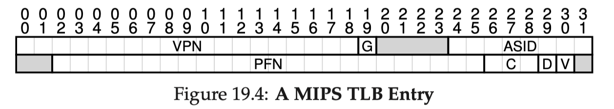

Chapter 19 Paging_Faster Translations(TLBs)
19.1 TLB（translation-lookaside buffer） Basic Algorithm
翻译先去TLB找，TLB没有去主内存找，找到了同时更新TLB，所以我们要做的就是尽可能的避免TLB misses，增加TLB hits。
- Aside：
两种基本的locality：
temporal locality：现在访问的数据将来可能也会被访问到
spatial locality：就近访问
19.3 Who Handles The TLB Miss？
早期CISC（complex-instruction set computers）都是hardware控制，硬件去找到page table并且更新TLB。但是更多现代的计算机系统RISC（reduced-instruction set computers），都是软硬结合，硬件系统抛出异常，切换到kernel mode然后交给OS的trap handler控制。
19.4 TLB Contents
VPN | PFN | other bits（e.g. valid、protection、address-space identifier、dirty bit）
19.5 TLB Issue：Context Switches
在进行processes之间切换的时候我们需要想办法来防止不同的process串用
TLB。主要有一下几种方法：
- flush the TLB：每次切换的时候清空TLB
- 引入ASID(address space identifier)来实现TLB共享，不同的process对应不同的ASID，类似于PID(process identifier)
19.6 Issue：Replacement Policy
先说两个常用的：
- least-recently-used
- random
19.7 A Real TLB Entry
如下图：

G-global bit：进程共享
ASID：OS用来区分不同进程
C-coherence：决定page是怎么被硬件缓存的
D-dirty bit：page被写的时候就标记
V-valid：是不是有效的翻译